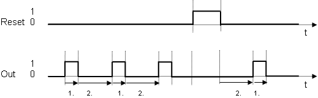

[CYCLEGEN] 周期脉冲发生器
功能块 CYCLEGEN (FB101) 生成一个具有可调节脉冲和暂停长度的周期。
CYCLEGEN (FB101) 生成一个具有可调节脉冲和暂停长度的周期。
Functioning
Time-related process
一般情况下以及复位时输出信号 [Out] 的时间相关过程。

Key
1. | 脉冲长度 [TiOn] |
2. | 暂停长度 [TiOff] |
Reset
- If the input value [Reset] = 1, all times are reset and [Out] = 0 is switched.
- If the input value [Reset] changes from 1 to 0, pause time resumes.
Application
CYCLEGEN 用于生成定期重复的脉冲。这是真的，例如指示灯闪烁或每 24 小时打开泵 1 分钟。
Process response
启动后，CYCLEGEN 在启动阶段启动。